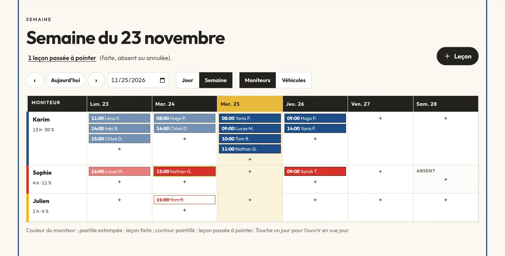
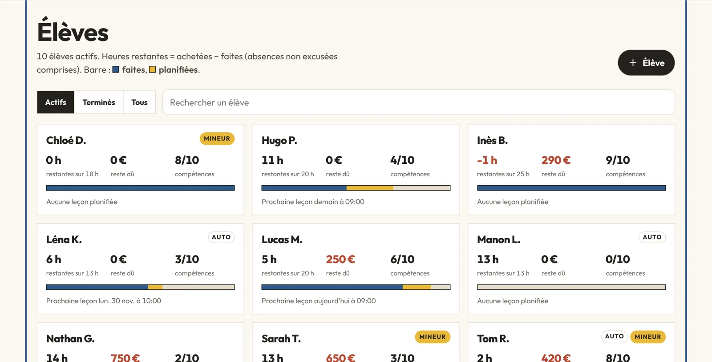
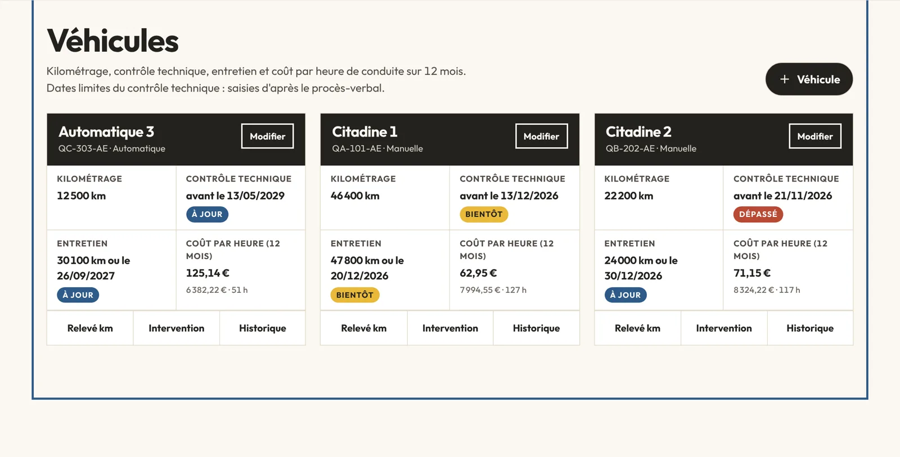
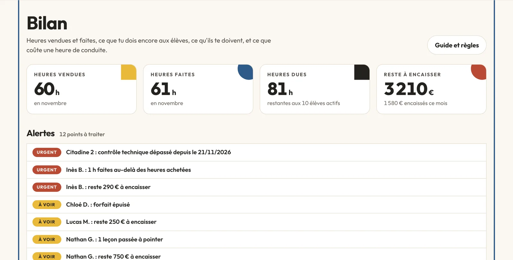

Concept pour les auto-écoles · gestion prête à l'emploi
Chaque leçon à sa place, chaque heure comptée.
Un outil en ligne déjà prêt pour les auto-écoles et les moniteurs indépendants : le planning des leçons par moniteur et par véhicule, sans double réservation, le solde d'heures et de paiements de chaque élève, le suivi des véhicules et un bilan du mois. Il s'utilise tel quel dès le premier jour, et je peux l'adapter sur mesure à votre façon de travailler.
La démo ouvre une auto-école fictive (trois moniteurs, trois véhicules, une dizaine d'élèves), sans inscription. Elle reste dans votre navigateur et n'envoie rien. Toutes les données affichées sur cette page sont fictives.
Le quotidien
Un planning sur papier ou dans plusieurs tableurs, des forfaits suivis à la main, des véhicules à faire entretenir et contrôler, et des élèves qui appellent pour savoir où ils en sont.
Ce que cela coûte
Deux leçons calées sur la même voiture, des heures faites au-delà du forfait, un reste à payer oublié, un contrôle technique qui passe la date sans que personne ne le voie.
Ce que fait l'outil
Il refuse les doubles réservations, tient le compte des heures et des paiements de chaque élève, prévient avant les échéances des véhicules et réunit tout dans un bilan.
01 · Planning
Un planning qui refuse les doublons
Vue semaine par moniteur ou par véhicule, vue jour sur téléphone.
- Une leçon qui chevauche celle d'un même moniteur, véhicule ou élève est refusée
- Hors disponibilités ou pendant une absence : confirmation demandée
- Pointage en un geste : faite, élève absent, annulée

02 · Élèves
« Il me reste combien d'heures ? » en un coup d'œil
Pour chaque élève : heures achetées, faites, planifiées et restantes, reste à payer, compétences acquises.
- Forfait dépassé et impayé signalés
- Élèves mineurs et boîte automatique repérés
- Suivi pédagogique coché et daté, sur une liste que vous adaptez

03 · Véhicules
Contrôle technique et entretien sous contrôle
Kilométrage, date limite du contrôle technique, entretien selon le carnet, et ce que coûte réellement une heure de conduite sur douze mois.
- Échéances « à jour », « bientôt », « dépassé »
- Relevés de kilométrage et interventions datés
- Coût par heure de conduite, véhicule par véhicule

04 · Bilan
Le mois en quatre chiffres, et ce qui est à traiter
Heures vendues et faites, heures dues aux élèves, reste à encaisser, et une liste d'alertes classées par urgence.
- Occupation des moniteurs et des véhicules
- Alertes : contrôle dépassé, forfait épuisé, impayé, leçon à pointer
- Exports CSV pour la comptabilité

Prêt à l'emploi, ou sur mesure
L'outil est prêt : il s'ouvre en ligne, sur ordinateur, tablette ou téléphone, et vos données sont synchronisées. Si votre organisation demande autre chose, je le construis pour vous.
Le template prêt à l'emploi
45 €, utilisable tel quel dès le premier jour
- Planning, élèves, moniteurs, véhicules, bilan
- Accès en ligne par clé, données synchronisées
- Démo complète à tester avant toute décision
La version sur mesure
Adaptée à votre auto-école
- Vos formules, forfaits et modes de financement
- Plusieurs agences, plusieurs catégories de permis
- Vos documents, vos exports, vos règles de planning
L'outil contient des données d'élèves, parfois mineurs : il appartient à l'auto-école d'en informer les personnes concernées. Les données de la démo sont fictives et ne quittent pas votre navigateur.
Trente minutes pour voir ce qui vous ferait gagner le plus de temps
Ouvrez la démo, puis dites-moi comment vous travaillez aujourd'hui : je vous dis franchement si l'outil prêt à l'emploi suffit, ou ce qu'une version sur mesure changerait.